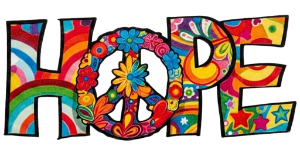

Col·laboracions
HOPE
▼
El passat 7 de març, la nostra comissió fallera Suïssa-L'Alqueria del Favero va demostrar que l'esperit faller va molt més enllà de la pólvora i la festa. Perquè quan una Falla s'uneix de veritat, és capaç de moure muntanyes.
Vam organitzar una perolà de 'fesols i naps' solidària a favor del Projecte Hope, i cada cullerada servida portava dins quelcom molt més gran que l'arròs: portava esperança. Esperança per a les famílies que lluiten cada dia contra el Limfoma No Hodgkin Pediàtric, esperança per als xiquets i xiquetes que mereixen un futur sense malaltia, esperança perquè la investigació continue avançant i trobe les respostes que tantes famílies necessiten.
Cada plat, cada euro recaptat, cada mà que va col·laborar aquell dia és la prova que la nostra comissió no sols alça monuments al carrer, sinó que també construeix alguna cosa molt més important: solidaritat de veritat, la que es cuina a foc lent i es reparteix entre tots.
Perquè ser faller és això. És seure junts al voltant d'una taula, compartir allò que som i posar el nostre granet d'arena perquè el món siga una mica millor. I el 7 de març, Suïssa-L'Alqueria del Favero ho va fer amb el cor en la mà i la cullera en l'altra.
A tots els que vinguéreu, col·laboràreu o simplement compartíreu la paraula: gràcies. Perquè la investigació contra el càncer infantil avança també gràcies a gestos com aquest. Gestos de barri, de Falla, de família.
Que ningú no dubte mai del poder d'una comissió unida. Que ningú no dubte del poder d'una perolà feta amb ànima.
Per Hope. Pels xiquets i xiquetes. Per la nostra Falla.